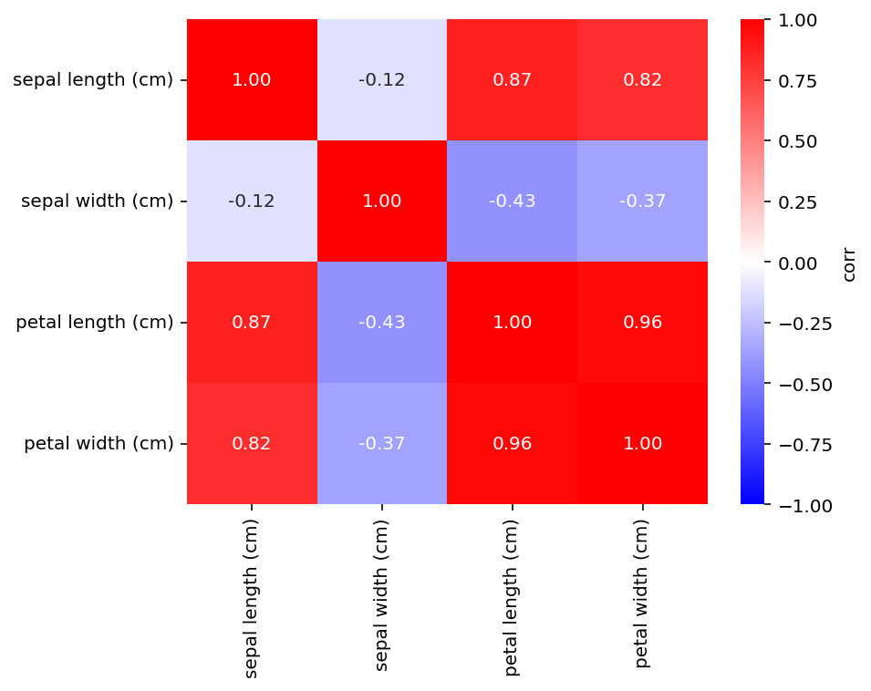
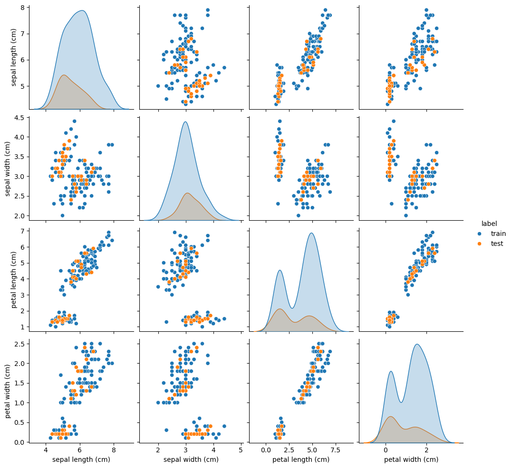
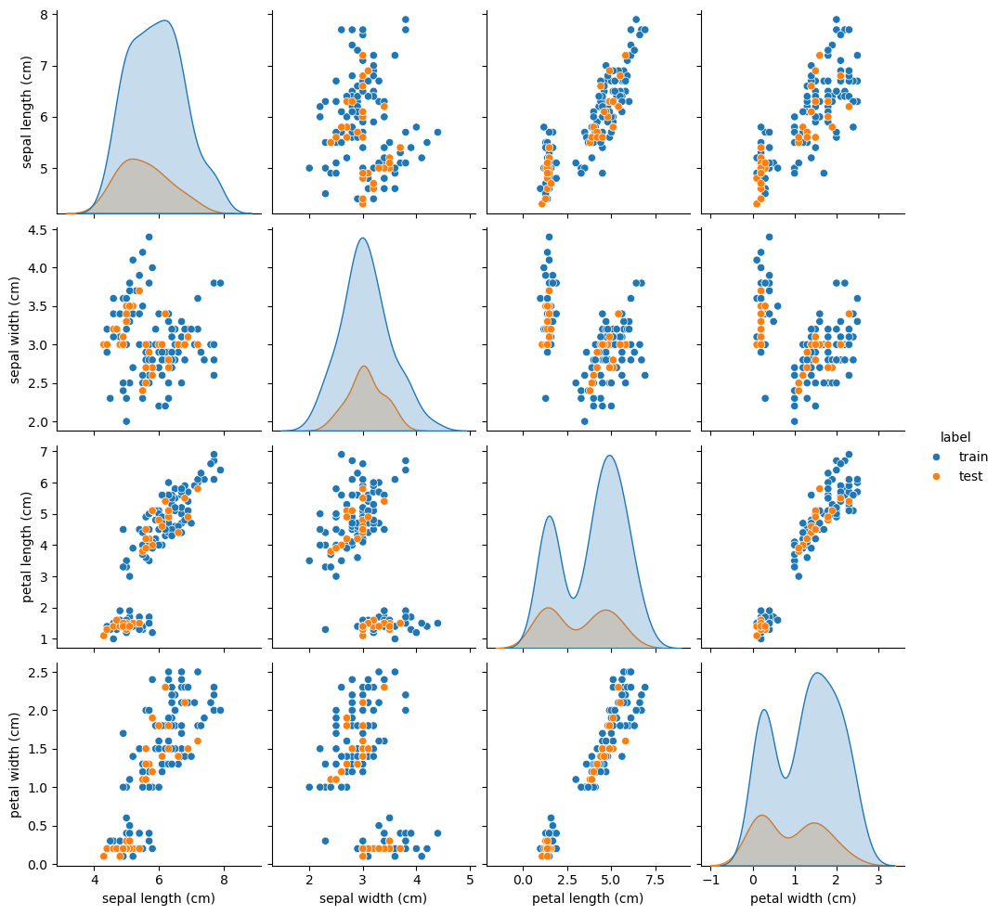

Other distance metrics#
Compare the training and test splits obtained with different distance metrics (metric).
import matplotlib.pyplot as plt
import pandas as pd
import seaborn as sns
from sklearn.datasets import load_iris
from kennard_stone import train_test_split
X: pd.DataFrame
y: pd.Series
X, y = load_iris(as_frame=True, return_X_y=True)
display(X.head(), y.to_frame().head())
| sepal length (cm) | sepal width (cm) | petal length (cm) | petal width (cm) | |
|---|---|---|---|---|
| 0 | 5.1 | 3.5 | 1.4 | 0.2 |
| 1 | 4.9 | 3.0 | 1.4 | 0.2 |
| 2 | 4.7 | 3.2 | 1.3 | 0.2 |
| 3 | 4.6 | 3.1 | 1.5 | 0.2 |
| 4 | 5.0 | 3.6 | 1.4 | 0.2 |
| target | |
|---|---|
| 0 | 0 |
| 1 | 0 |
| 2 | 0 |
| 3 | 0 |
| 4 | 0 |
X_train_euc, X_test_euc, y_train_euc, y_test_euc = train_test_split(
X, y, test_size=0.2, n_jobs=-1, metric="euclidean"
)
2026-11-07 18:25:21,314 - kennard_stone.utils._pairwise:115[INFO] - Calculating pairwise distances using scikit-learn.
2026-11-07 18:25:21,336 - kennard_stone.utils._pairwise:115[INFO] - Calculating pairwise distances using scikit-learn.
X_train_mah, X_test_mah, y_train_mah, y_test_mah = train_test_split(
X, y, test_size=0.2, n_jobs=-1, metric="mahalanobis"
)
2026-11-07 18:25:21,365 - kennard_stone.utils._pairwise:115[INFO] - Calculating pairwise distances using scikit-learn.
2026-11-07 18:25:21,381 - kennard_stone.utils._pairwise:115[INFO] - Calculating pairwise distances using scikit-learn.
fig, ax = plt.subplots(dpi=144)
sns.heatmap(
X.corr(),
vmax=1,
vmin=-1,
cbar_kws=dict(label="corr"),
cmap="bwr",
annot=True,
fmt=".2f",
ax=ax,
)
<Axes: >

sns.pairplot(
pd.concat(
(
pd.concat(
(
X_train_euc,
pd.Series(
("train",) * X_train_euc.shape[0],
name="label",
index=X_train_euc.index,
),
),
axis=1,
),
pd.concat(
(
X_test_euc,
pd.Series(
("test",) * X_test_euc.shape[0],
name="label",
index=X_test_euc.index,
),
),
axis=1,
),
),
axis=0,
),
hue="label",
)
<seaborn.axisgrid.PairGrid at 0x16a7eb260>

sns.pairplot(
pd.concat(
(
pd.concat(
(
X_train_mah,
pd.Series(
("train",) * X_train_mah.shape[0],
name="label",
index=X_train_mah.index,
),
),
axis=1,
),
pd.concat(
(
X_test_mah,
pd.Series(
("test",) * X_test_mah.shape[0],
name="label",
index=X_test_mah.index,
),
),
axis=1,
),
),
axis=0,
),
hue="label",
)
<seaborn.axisgrid.PairGrid at 0x175908350>
